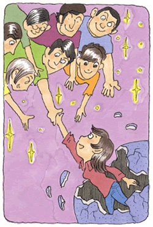

気分障害（うつ病、気分変調症）1
対人恐怖とうつ病、不眠症に悩まされて
（うつ病、対人恐怖、不眠、他）
福田 みゆき（仮名）25歳・会社員
両親や周囲への依存心が強く、甘えん坊だった私
私は、九州で生まれました。家族構成は父、母、兄と私の四人家族です。小さい頃、言葉を話せるようになることが遅かったそうで、両親が心配したそうです。幼稚園の先生が心配して、言語外来がある病院を紹介してもらって、発声練習したことを今でも覚えています。わがままばかり言って、両親や周辺の人たちに甘えて育った私は、辛抱することができず、1つ嫌なことがあると、逆切れすることがしばしばあり、時には泣き出す有り様で、我慢することが出来ない未熟なまま成長してしまいました。〜ならなくてはならないと、頑に素直になれなかったことです。密かに分かりながらも、他人の意見に耳を向けることができませんでした。自分を信じることが出来ずに、人を当てにし、感情に流されるまま、ただオドオドし、怯えていただけでした。それで、自分を愛することが出来なかったことです。当然、人を愛することが出来るわけがありません。自己中心的で、相手の立場に立って考えることが出来ずに、仲間はずれにされることがよくあり、恐らく、このことが原因で学生時代は、人からも利用され、いじめられ続けたと思います。バイキン扱いされ、言葉の暴力も受け、同時に、性的暴力も受けました。人を信じられなくなったことで、クヨクヨ悩みだし、気持ちをさらけ出すことが恐くなってしまいました。自然と、殻の中に閉じこもり、本心を出してはいけないと思うようになってしまい、人と関わることが段々少なくなっていきました。自然と、外出することが少なくなり、妄想・空想癖が付いてしまい、現実世界と区別が付かなくなってしまっていたのです。他人の注目を引くために、見栄をはり、偽りを言うこともしてしまいました。これも、自分傷つかないようにしようとするために、やってしまったものだと思います。思いつめるうちに、小学二年生のときに始めて体に症状が現れるようになっていきました。高熱、頭痛、腹痛、胃痛に始まり、体のだるさが出て、両親に症状を訴えると、勉強や学校がいやだと思い込まれ、仮病を使っていると言われ、いじめられていることを理解してもらえず辛かったです。病院通いと、薬漬けの生活が始まりました。中学の時に、保健室のベッドで休んでいると天井がグルグル回りだし、このことを母に話すと精神科に連れて行ってくれました。当時は、神経症のこと分かってもらえずに、怠けていると思われていました。両親からも嫌われていました。成人になってから、両親に言う機会があり言うと、涙ながら「ごめんね」とあやまってくれました。
うつ病と不眠症になって
社会人になってから、会社の付き合いで、飲みに出かけた出来事で、昔体験したことが甦り、体がビクビクして男性の前だとなおさら体が震えました。職場のトラブルに巻き込まれ、うつ状態と不眠症になりました。精神安定剤と睡眠剤を飲む日々が始まりました。服用期間が4〜5年飲み続けたと思います。薬を飲んでいても、症状が治まることはありませんでした。それでも、気をまぎわらす意味で薬を飲んでいたと思います。神経症は治るはずはなく、ますます症状にとらわれていくのでした。自分の意思をはっきり述べることが出来ないため、次から次と職場のトラブルに巻き込まれ、症状を深めていくのでした。しまいに、職場の上司から「仕事が出来ていない、この仕事に向いていないなら転職したほうがいいのではないのか？」言われ、周囲から攻撃され続け、遂に、うつ病になってしまいました。周囲を見回せなくなり、完全に感情のない人間になってしまいました。不安で救われるものには手当たり次第に手を出していきました。性格改善講座を通信教育で受け、あらゆる本を購入し、自己啓発、自分を良く見せる本など…。結局、買ったという自己満足で終わり、読まずに部屋の片隅にほこりを被るだけでした。
森田療法との出会い。“神経症は病気ではない”
散々さまよった挙句、当時通っていた病院やカウンセリングに通うことは止め、母から「あなたの性格の人が集まる団体があるから通ってみたら？」と勧められ、インターネットで調べて、検索すると森田療法がヒットし、生活の発見会を知るきっかけになりました。色々読んでみると、私に当てはまることが多く、早速生活の発見会に問い合わせをし、集談会（生活の発見会の会合）に参加しました。集談会に参加するのもドキドキしましたが、悩みを話すと「大丈夫、必ず良くなるから」と言われてホッとしたのを覚えています。集談会の先輩が「森田神経質やね。」と言ってくださり、やっと私のことを理解してくれる人たちに出会えたことを嬉しく思いました。私のことを思い、色々アドバイスをしてくださり、「私と同世代女性が参加するドゥ・オポチュニティー集談会に参加するといいよ」と言ってくださり、また、ある人が「尊敬するおじさまがメンタルヘルス岡本記念財団図書室にいるよ」と言われるので恐る恐る行ってみました。これが、Mさん（当財団職員）との出会いです。図書室に行くと彼が私の悩みや症状を聞いてくれて、森田療法の創始者である森田正馬先生の「神経質講義」を聞かせてくれました。はじめてお聞きする先生のお声に固唾を飲んで聞き込みました。私が本を読んで感じたこと、つまり、「神経質は病気ではない」ですよねと、彼に念押ししますと、彼は「神経質は病気ではありません。」と即答され、私は一気に、体の緊張が氷解していったのが分かりました。『何かの機会に、普通の人のだれにでも起こる不快の感覚をふと気にし出したということから始まり、のちにはこれを神経質の性質、つまり自己観察が強くてものごとを気にするということから、つねにこれを取り越し苦労するようになって、あけくれそのことばかりに執着するために、だんだんにその不快感覚が憎悪するようになります。』 このことを理解するまでに時間が相当掛かりました。つまり、不安や不快な感覚を病的と思い込んでいたからです。その不安がピークに達すると何もする気が起きない有り様でした。とにかく、不安な時は財団の掲示板「体験フォーラム」に噛り付きました。何かにすがり依存していないと、何も出来ない有り様でした。
それからは、あれこれ何かと理由をつけて行動ができてなかった私が少しずつ行動を起こすようになりました。苦しいなかの行動。初めは、辛かったけど、押さえつけていた欲望、「生の欲望」に火が灯り、それに従って行動をしていきました。自分で恐る恐る行動しているつもりでしたが、実際は人に依存をしていないと何もできませんでした。でも、不安ながらも行動ができたのも、集談会のみなさんのお陰です。当時は、森田療法協力医のところに通っていた私は、協力医からも「薬の飲む量も減らしていきなさい」と言われました。行動的になり、薬を飲まなくてももう大丈夫と思った私は、「薬を止めるのは今しかない！！」と断薬を決意しました。断薬ははじめたものの長期間薬を飲んでいたせいか、体と心は薬を強く要求します。辛くて、気をまぎわらすために甘いものを食べずにいられませんでした。でも、頑張って断薬をしていきました。苛々ソワソワして落ち着きません。とても苦しかったです。その時も、掲示板「体験フォーラム」に書き込み、皆さんから暖かい励ましやアドバイスを頂、きっと私は元気になれると確信したものです。

それでも長くは続かず嫉妬芯の強い私は直ぐに心が動揺します。例えば、みんなが、楽しそうに中で話し合いをしていると孤独感が襲ってきます。やっと皆様にお会い出来る集談会がやって来た。集談会会場で思わず泣き崩れたこともありました。辛い時に自分を責め続けていた長年の癖がここでもトラウマのように出てきます。そんな中でも、スポーツクラブに行き汗を流しました。また、転職活動もしました。やがて内定を頂き今の職場に付くことができました。当時は、気持ちが内側に向いていて症状にとらわれていました。薬が体から綺麗に抜けるまで、体が重く、動かしても動かしても、すぐにハーハーと息切れを起こしてしまいます。体力回復するまで気の遠くなるような時間が掛かりました。
皆さんがロードを趣味でされていることを耳にし、辛い時期にロードをゲットすることができました。それから、私の行動範囲が広まって生きました。家に引きこもりがちな私を外に飛び出してくれるきっかけをくれるのです。それからの私は、積極的に行動をすることが徐々にできるようになっていき、感情の流れ方が早くなっていき、体に症状として現れることが少なくなっていっていることに嬉しく思います。これからも、今まで自分が未熟で何もできないことに対して、怯え、逃げていたことでおそまきながらも人生勉強の始まりだと思いました。ご縁で、皆さんに出会えたことをうれしく思い、私にとって、なくてもならない、何にも変えがたい「宝物」です。